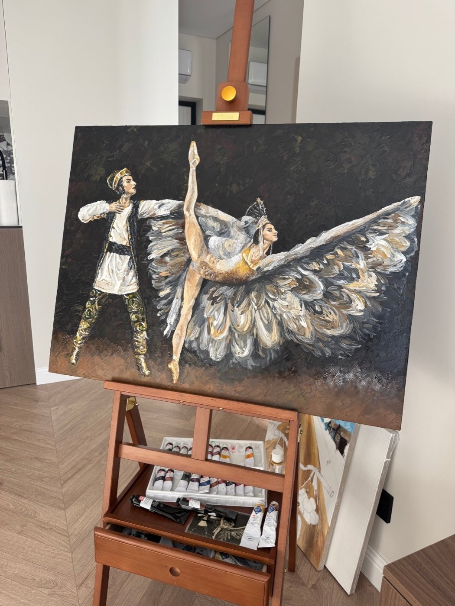
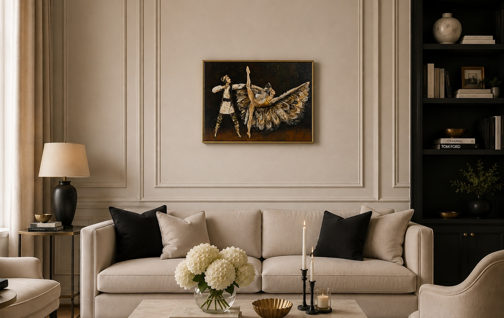

«Царевна-лебедь»
Холст на подрамнике, Лён
Масло
60 х 80 см.
Эта работа родилась из впечатления от старой чёрно-белой открытки с концертным номером «Царевна-лебедь». Мне хотелось сохранить в ней ощущение ушедшей эпохи — театральной фотографии, сценического образа, застывшего на мгновение движения, — но увидеть этот сюжет уже своими глазами, в цвете и фактуре живописи.
Мне было важно не просто воспроизвести старый сценический образ, а переосмыслить его через живописную материю. Поэтому здесь так много фактуры: мазки напоминают перья, старую театральную декорацию, отблески софитов и одновременно след времени. Тёмный фон словно поглощает сцену, оставляя героев в пространстве света.
Вцентре композиции — танцовщица в образе лебедя. Её тело вытянуто в сложном, почти невесомом движении: одна нога устремляется вверх, руки и огромные крылья костюма раскрываются в пространстве. Перья становятся не просто частью костюма, а самостоятельной стихией — они окружают героиню, словно превращая её в настоящую птицу. Серебристо-белые, серые, золотистые и жемчужные оттенки переливаются в густых мазках, создавая ощущение движения даже в неподвижной картине.
Рядом с ней — партнёр, словно удерживающий связь с землёй. Его фигура более графична и контрастна: чёрный, белый и золото костюма перекликаются с тёмным сценическим пространством. Он словно существует между реальностью и сказкой, сопровождая превращение танцовщицы в лебедя.


Это моя версия «Царевны-лебедя» — не столько иллюстрация сказки, сколько воспоминание о театре, увиденное через старую открытку и заново пережитое в живописи. В ней соединяются хрупкость и сила, человеческое тело и образ птицы, память о прошлом и мой сегодняшний взгляд на этот образ.